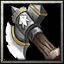

- 主要屬性 力量
攻擊範圍 128
- 基礎護甲 6
基礎攻速 1.8
- 基礎攻擊 107 - 125
基礎跑速 300
武田家臣
武田信玄的四子，武田信玄去世後，勝賴成為家督(大名)，後來勝賴率領號稱天下無敵的武田騎兵進攻德川家，但卻在長篠合戰時敗給織田、德川聯軍，從此一蹶不振。
-

-
W
怒擊斧
-
100/120/140/160
-
13
對著敵方的部隊丟出狂怒的飛斧，造成(100/200/300/400)傷害並且擊暈(0.5/1.0/1.5/2.0)秒。
-
-
E
刺針之牆
-
120/140/160/180
-
28/25/22/19
向著指定方向造出一道平行的刺針之牆，所有踩過刺針之牆的敵人將會每秒受到(50/70/90/110)的傷害並減慢(20/30/40/50)%的移動速度，刺針之牆存在16秒。
無視魔法免疫牽制，冷卻時間隨技能等級提升降低。
施展之後將會增加(10/15/20/25)%移動速度，並且攻擊時將有100%的機率造成(1.6/2.0/2.4/2.8)倍的傷害。持續15秒或是攻擊5次。
每當使用技能或是物品時，將可以以自身為中心釋放一道震波，對周圍的敵人造成(85/130/170)傷害，並且減慢30%的攻速與移動速度，持續(4.0/4.5/5.0)秒。
學習等級為6/12/18，無視魔法免疫牽制。
永久性的提升(3/6/9/12)靈活、智慧和力量。